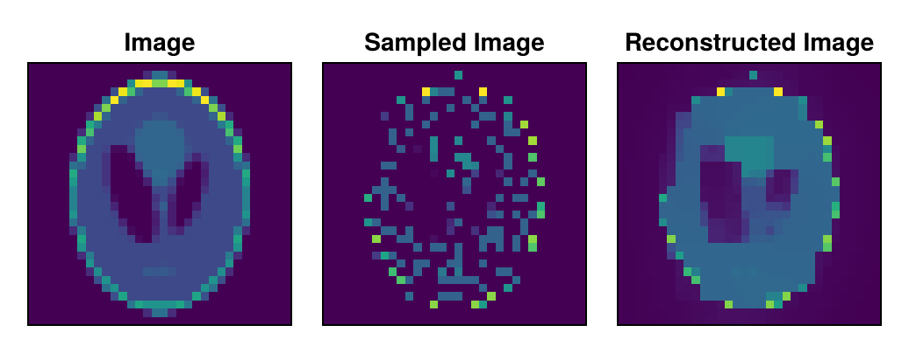

GPU Acceleration
RegularizedLeastSquares.jl supports generic GPU acceleration. This means that the user can use any GPU array type that supports the GPUArrays interface. This includes CUDA.jl, AMDGPU.jl, and Metal.jl. To perform a reconstruction on the GPU, one has to load a GPU backend package such as CUDA and specify the GPU array type:
using CUDA
gpu = CuArrayAt first we will look at an example of dense GPU arrays.
using RegularizedLeastSquares
A = gpu(rand(Float32, 32, 16))
x = gpu(rand(Float32, 16))
b = A*x;Solvers adapt their states based on the type of the given measurement vector. This means that the solver will automatically switch to GPU acceleration if a GPU array is passed as the measurement vector.
solver = createLinearSolver(CGNR, A; reg = L2Regularization(0.0001), iterations=32);
x_approx = solve!(solver, b)16-element Vector{Float32}:
0.39973652
0.8619463
0.23823477
0.8223465
0.5590051
0.84025264
0.43318644
0.5291335
0.5058377
0.252412
0.20603149
0.6711451
0.98454237
0.39729846
0.96905726
0.8204986This adaption does not include the operator. So if we want to compare with CPU result, we need to construct a new solver with a CPU operator.
solver = createLinearSolver(CGNR, Array(A); reg = L2Regularization(0.0001), iterations=32);
x_cpu = solve!(solver, Array(b))
isapprox(Array(x_approx), x_cpu)trueMoving a CGNR Solver with Adapt.jl
A CGNR solver can also be adapted to the target backend with Adapt.jl before solving:
using Adapt
cpu_solver = createLinearSolver(CGNR, Array(A); reg = L2Regularization(0.0001), iterations=32);
gpu_solver = Adapt.adapt(gpu, cpu_solver)
x_adapted = solve!(gpu_solver, b)
isapprox(Array(x_adapted), x_cpu)trueEach operator of the solver must support Adapt.jl. FISTA, OptISTA, POGM, ADMM, SplitBregman, Kaczmarz, DirectSolver and PseudoInverse can be adapted in the same way, FISTA, OptISTA, POGM, ADMM, SplitBregman and Kaczmarz also after some iterations; PseudoInverse moves its stored SVD without recomputing it, DirectSolver needs lu on the target array type to solve, and a greedy randomized Kaczmarz only runs on the CPU. Other solvers do not support Adapt.adapt yet.
The built-in regularization terms can be adapted on their own. This includes the internal cache of an already used TVRegularization. Masks and image geometry stay on the host:
tv = TVRegularization(0.01f0; shape = (4, 4))
gpu_tv = Adapt.adapt(gpu, tv)
prox!(gpu_tv, gpu(rand(Float32, 16)));Projection and plug-and-play terms adapt their function, model and input_transform with the Adapt.jl rules of these objects. A closure moves the arrays it captures, while a callable type that holds arrays needs its own Adapt.adapt_structure. Global variables are not moved, and for a target of the same backend, such as Array, arrays are shared as Adapt.jl does:
struct Weighting{V}
w::V
end
(f::Weighting)(x) = x .* f.w
Adapt.@adapt_structure Weighting
pnp = PlugAndPlayRegularization(0.5f0; model = Weighting(rand(Float32, 4, 4)), shape = [4, 4])
gpu_pnp = Adapt.adapt(gpu, pnp)
prox!(gpu_pnp, gpu(rand(Float32, 16)));Matrix-Free Operators
A special case is the usage of matrix-free operators. Since these operators do not have a concrete matrix representation, their GPU support depends on their implementation. Since not all multiplications within a solver approximation are in-place, the operator also needs to support the * operation and construct an appropriate result vector. For matrix-free operators based on LinearOperators.jl, this can be achieved by implementing the LinearOperators.storage_type method.
In the following, we will take another look at the CS example and execute it on the GPU. Note that for the JLArray example we chose a small phantom, since the JLArray implementation is not optimized for performance:
using ImagePhantoms, ImageGeoms
N = 32
image = shepp_logan(N, SheppLoganToft())
using Random, LinearOperatorCollection
randomIndices = shuffle(eachindex(image))
sampledIndices = sort(randomIndices[1:div(end, 3)]);To construct the operator, we need to convert the indices to a GPU array. We also need to specify the correct storage type. In both LinearOperators.jl and LinearOperatorCollection.jl this is done with the S keyword argument.
gpu_indices = gpu(sampledIndices)
A = SamplingOp(eltype(image), pattern = gpu_indices, shape = size(image), S = typeof(b));Let's inspect the storage type of the operator:
using LinearOperatorCollection.LinearOperators
LinearOperators.storage_type(A)Vector{Float32} (alias for Array{Float32, 1})Afterwards we can use the operator as usual:
b = A*vec(gpu(image));And use it in the solver:
using RegularizedLeastSquares
reg = TVRegularization(0.01; shape=size(image))
solver = createLinearSolver(FISTA, A; reg=reg, iterations=20)
img_approx = solve!(solver,b);To visualize the reconstructed image, we need to reshape the result vector to the correct shape and convert it to a CPU array:
img_approx = reshape(Array(img_approx),size(image))32×32 Matrix{Float32}:
0.00127677 0.00132964 0.00141072 0.00149832 … 0.00304974 0.00312562
0.00136587 0.0014216 0.00150968 0.00161749 0.00327275 0.00333137
0.00152684 0.00158859 0.00170949 0.00190793 0.0036772 0.00369288
0.00176505 0.00185591 0.00209076 0.00252626 0.00426001 0.00417425
0.00213425 0.00232056 0.00280261 0.0036066 0.00511471 0.00484094
0.0026693 0.00305679 0.00390171 0.00506821 … 0.00642657 0.00588239
0.00336359 0.0040413 0.00527284 0.0068086 0.00824353 0.0074857
0.00427004 0.00516168 0.00657466 0.00794054 0.0100715 0.00944863
0.0053561 0.0061454 0.00732238 0.00820429 0.0119596 0.0105989
0.00649122 0.0068265 0.00721636 0.0146779 0.0141429 0.0150665
⋮ ⋱ ⋮
0.00726147 0.00798597 0.00833104 0.00878214 0.00784763 0.00708229
0.00512959 0.00604289 0.00721249 0.00722376 0.00619092 0.00524018
0.00348417 0.0042029 0.00528467 0.00597442 … 0.00457274 0.00376898
0.00236836 0.00284476 0.00368789 0.004542 0.00322428 0.00270627
0.00169628 0.00196973 0.0024828 0.00318912 0.00223101 0.00198062
0.00133832 0.00149123 0.00177407 0.00218993 0.00161775 0.00151154
0.00117093 0.00126415 0.00144076 0.0016938 0.00126016 0.00120997
0.00110447 0.00116963 0.00129965 0.00148357 … 0.0010487 0.00102525
0.00108323 0.00113542 0.00124349 0.00139609 0.000942135 0.000931566We will again use CairoMakie for visualization:
using CairoMakie
function plot_image(figPos, img; title = "", width = 150, height = 150)
ax = CairoMakie.Axis(figPos; yreversed=true, title, width, height)
hidedecorations!(ax)
heatmap!(ax, img)
end
fig = Figure()
plot_image(fig[1,1], image, title = "Image")
samplingMask = fill(false, size(image))
samplingMask[sampledIndices] .= true
plot_image(fig[1,2], image .* samplingMask, title = "Sampled Image")
plot_image(fig[1,3], img_approx, title = "Reconstructed Image")
resize_to_layout!(fig)
fig
This page was generated using Literate.jl.